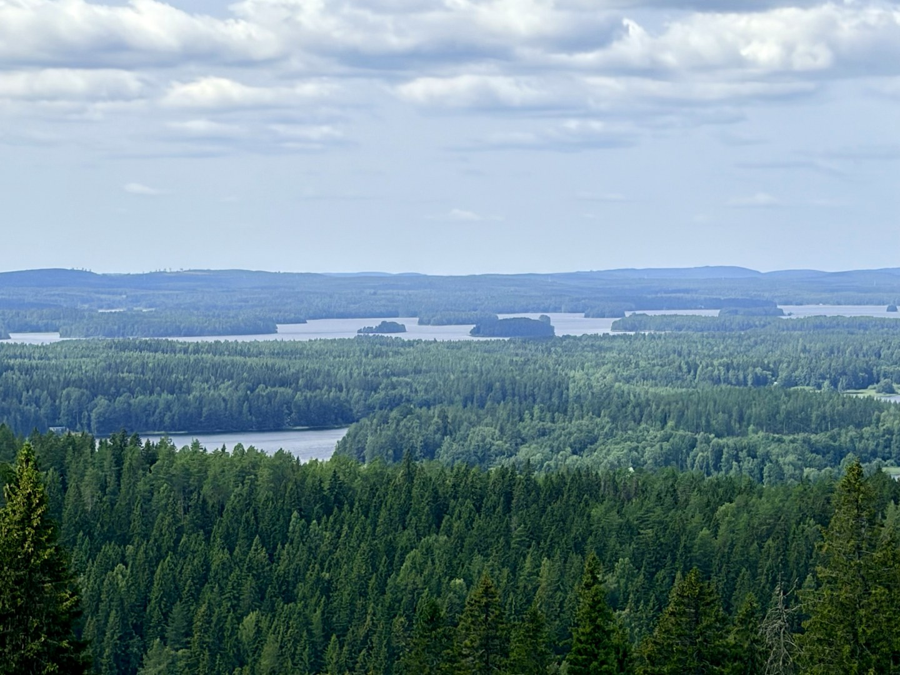

Borders move over people who stay still
What my father's occupation and my mother's border taught me — and why Finland was not a market to me.
My father was a boy on Bornholm in 1945. When the war ended and the rest of Denmark was liberated, Bornholm was not. The Soviet Union bombed Rønne and Nexø, landed, and stayed for eleven months. Soviet soldiers were on the family's land. He was a child, and he watched it, and he told his children about it for the rest of his life.
My mother is from Sønderjylland. Her parents were born there in 1908 — as Germans, because Denmark had lost the war of 1864 and the border had moved over their grandparents without anyone going anywhere. They were Danish anyway, in the way that matters. In 1920 the border moved back. Nobody had gone anywhere that time either.
So I was raised on a particular piece of knowledge that most Danes do not have in the family, and that no Dane gets from a textbook: borders move over people who stay still. Nationality is not a thing you are issued and then own. It is a thing that can be taken, and kept anyway, and sometimes given back.
I did not think of this as useful information. It was simply the furniture of childhood — the stories that got told at the table, the ones you half-listen to until one day you find that they have organised how you see things.
Then I got to know Finland.

The echo
Finland lost Karelia in 1940. Around 410,000 people — twelve per cent of the entire population — left and were resettled inside what remained of the country. The peace treaty did not require them to leave. Almost every one of them left anyway.
Then, when Finland briefly took the territory back and 260,000 people went home, and then had to evacuate it all over again in 1944 — nineteen chose to stay and become Soviet citizens.
Nineteen. Out of 260,000.
I read that number and something in it was familiar. Not the scale. Denmark's version is smaller and cost immeasurably less; eleven months is not a lost province, and a border that moves back is not a border that stays moved. It was the shape that I recognised. A people who understood, in their bones, that the map is not the same thing as who you are. My mother's parents, born German and Danish anyway. Karelians resettled hundreds of kilometres away who stayed Karelian for the rest of their lives, and whose grandchildren still know exactly which lake the family came from.
This is not a Danish insight I am bringing to Finland. It is a Finnish reality that my own family happened to brush against, at a smaller size, and which meant I could hear it when I got there.
Not history
Half of my company works in a country where none of this is in the past tense.
Finland's border with Russia is 1,340 kilometres long, and since 2023 it has been the longest stretch of direct contact between NATO and Russia. There is a fence going up along the most exposed sections. The maximum age for reservists has been raised to 65. My Finnish colleagues do not hold views about resilience; they have a plan, and they are inside it. When one of them mentions in passing that she is driving from Kuopio to Joensuu — "even closer to the Russian border" — it is not a metaphor she is offering me. It is her Tuesday.
Finland's defence doctrine has a name: whole-of-society. Government, business, NGOs, ordinary citizens; security of supply, critical infrastructure, the economy — planned together, on the working assumption that everybody is part of it. Not a slogan. A functioning system, tested.
Which is to say: talkoot. Not the charming version — the barn raised in a weekend, the village work-party, the road cleared because it needed clearing. The same instinct, at national scale. You show up, because the work is everyone's. A society that actually means that can raise a barn on a Saturday. It can also hold a border for eighty years.
What this has to do with a company
I write and talk a great deal about trust. It is the centre of what we are building at Context&, and I am aware of how the word sounds when a consultancy uses it — soft, pleasant, unfalsifiable. A value on a wall.
Finland is my answer to that.
In Denmark we inherited a high-trust society and mostly forgot to ask what it cost. It arrived as a gift, from people who had already paid. Finland has never been permitted that particular amnesia. Trust there is not a mood or a national charm; it is infrastructure, maintained deliberately, because the alternative has a name and it is 1,340 kilometres long.
So when I say that our company runs on trust, I am aware that one half of it grew up understanding that as a condition of survival, and the other half received it in the post. I know which half has more to teach.
The thing I already said out loud
When Sulava became Context&, I wrote that we were not there to fix what they had built — we were there to learn from it. Ira's words came before mine in that announcement. That was deliberate, and it was the truest sentence in it: in Denmark, we are going to learn a great deal from our Finnish colleagues. The bar the Sulava team set is one we intend to live up to.
We have a Danish phrase for the idea at the centre of our company — forpligtende fællesskab, belonging that binds. I use it constantly. It is a good phrase and I stand behind it.
The Finns had the word first, and they had to mean it.
I'm Jakob Schou, CEO of Context&, a Nordic Microsoft AI consultancy. This site is my own — where I think out loud about leadership, trust, and building a company in the AI era. The polished version lives at the company; the working-out happens here.